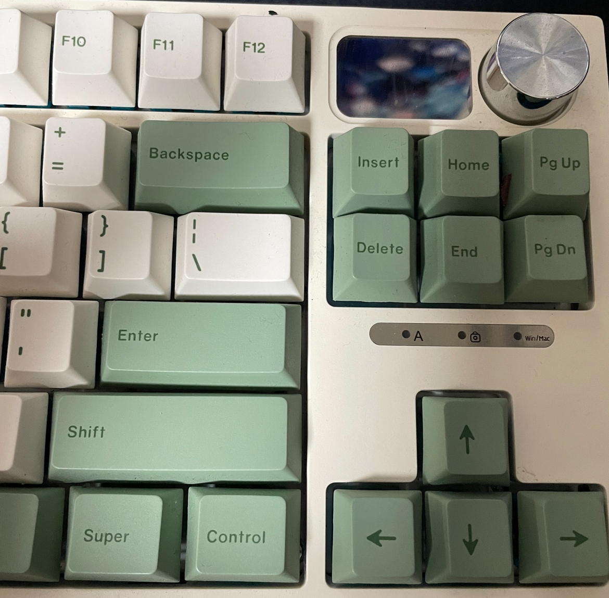
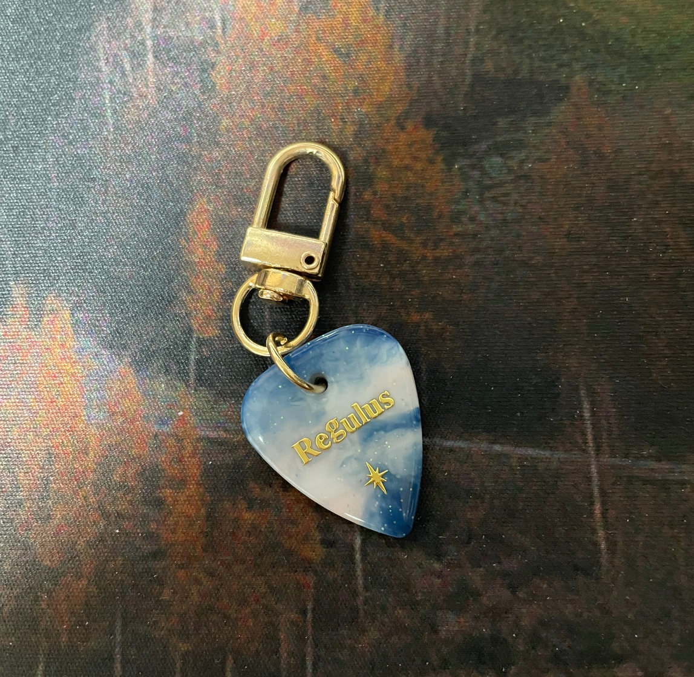
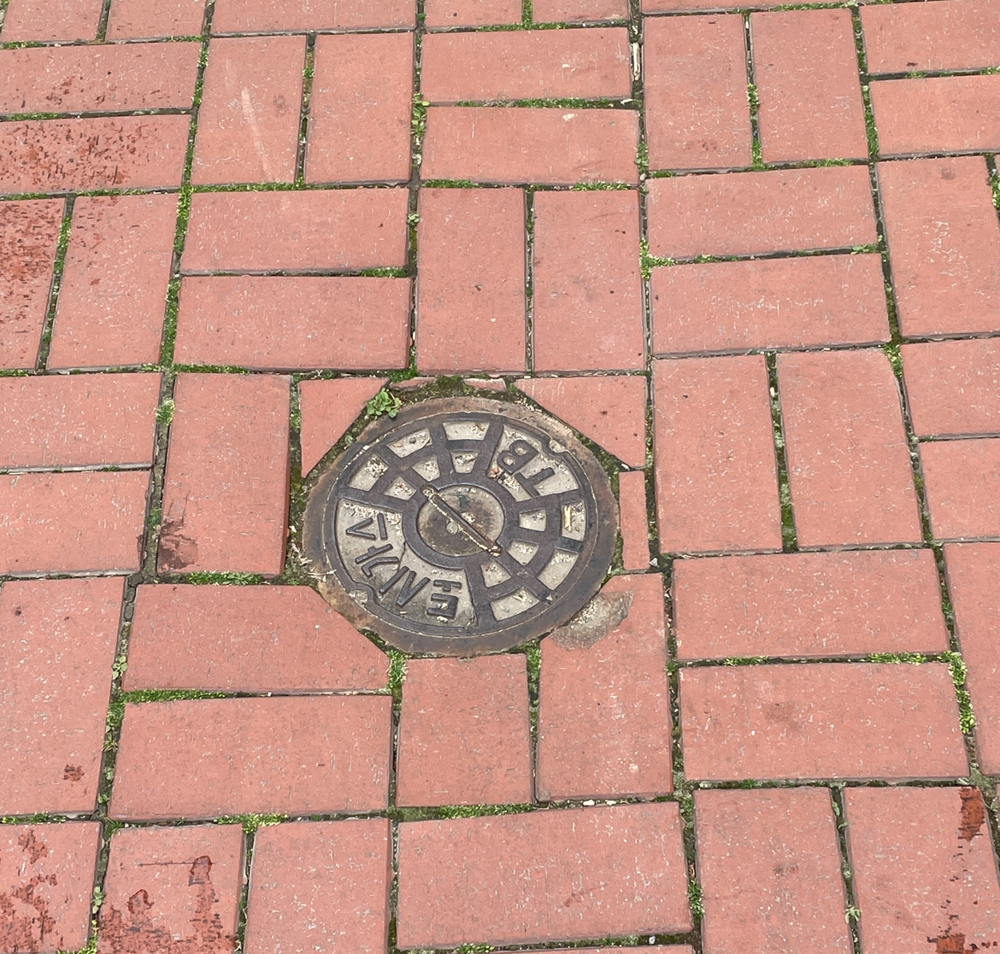
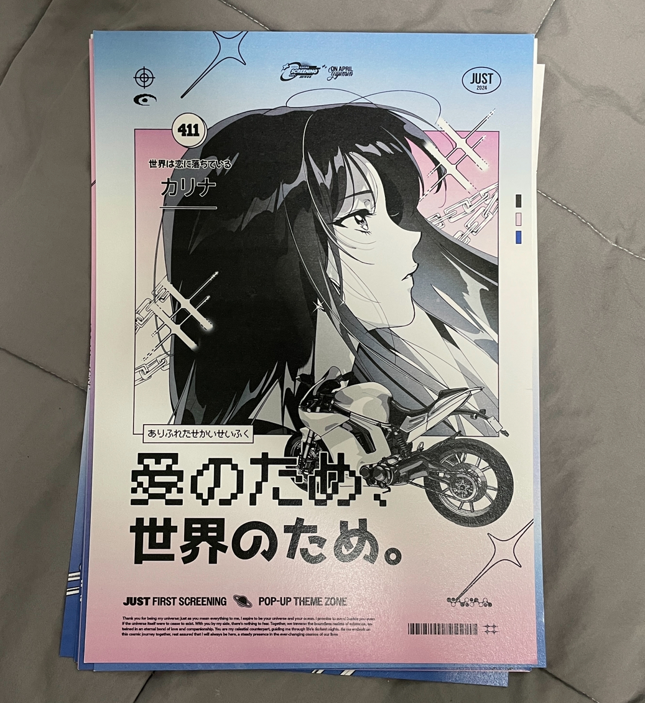
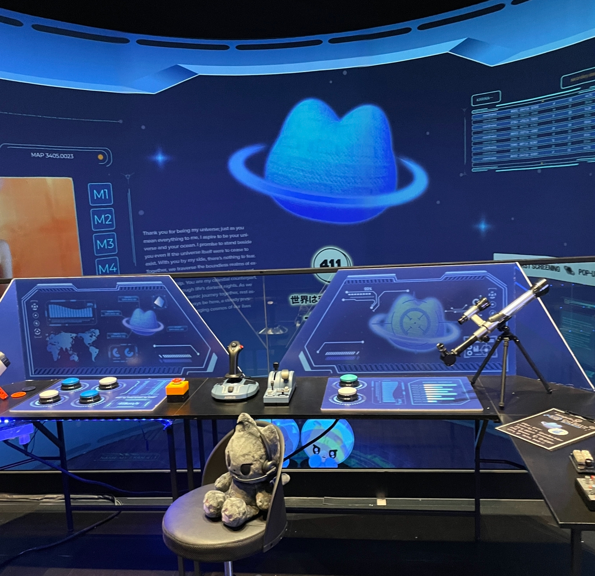
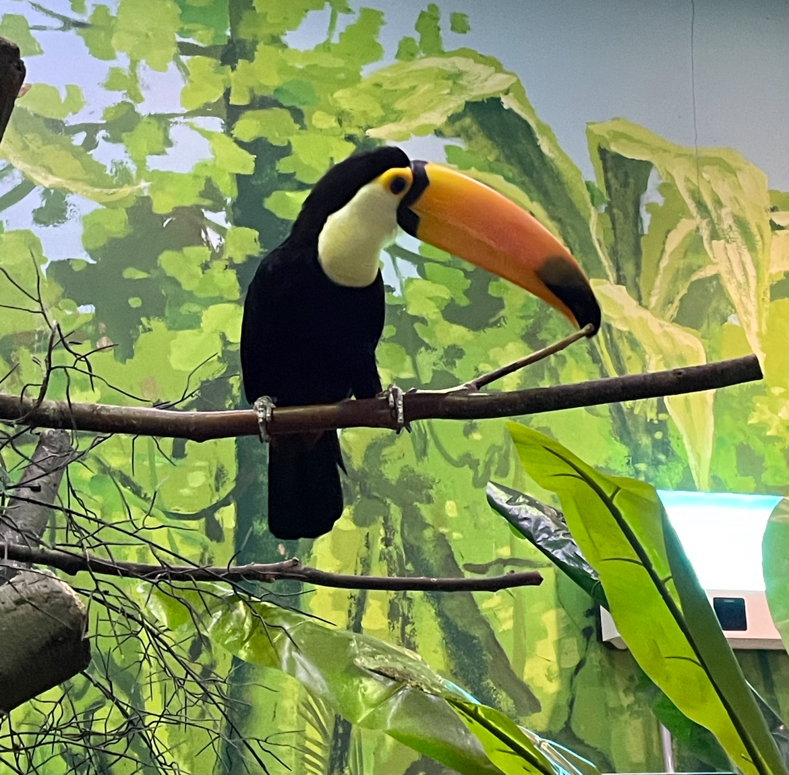
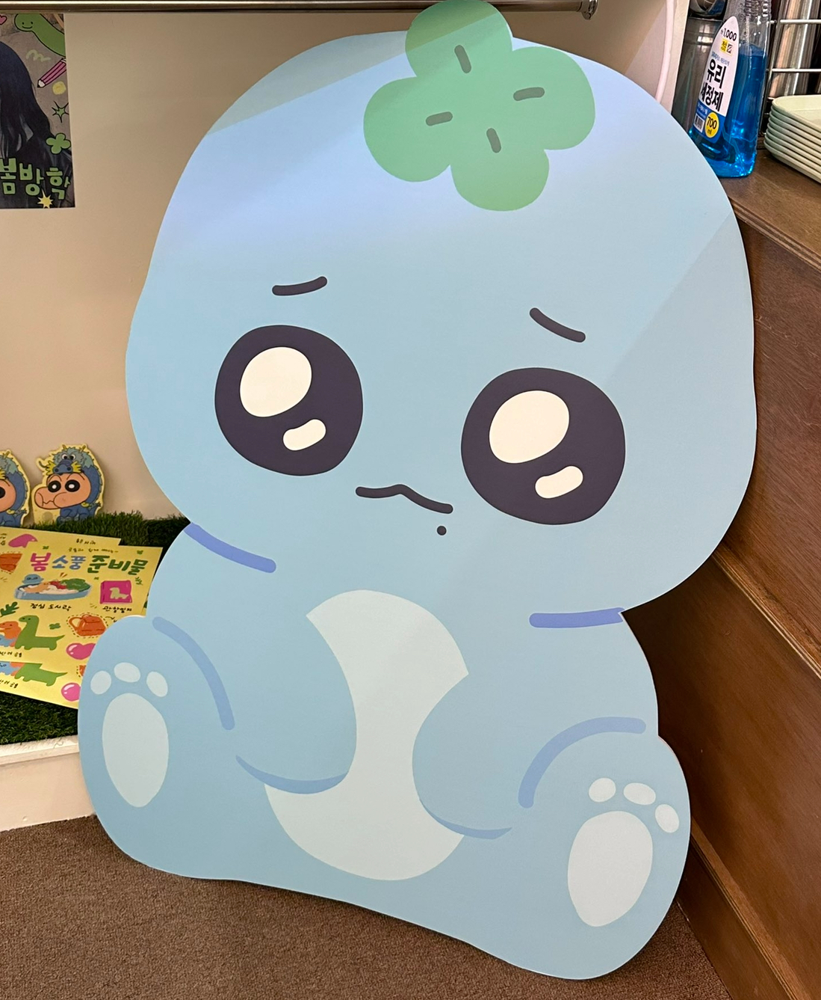
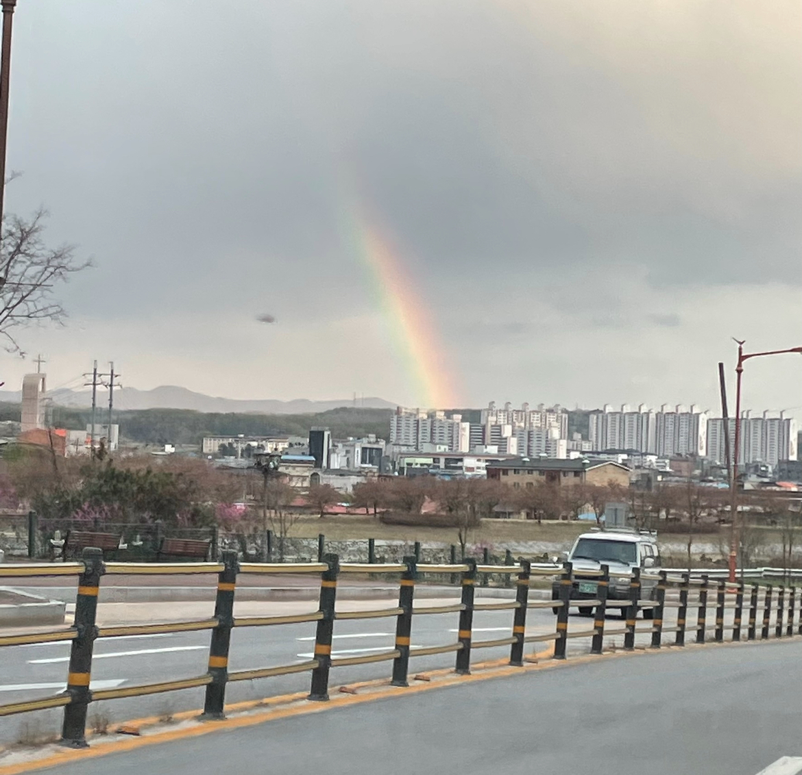
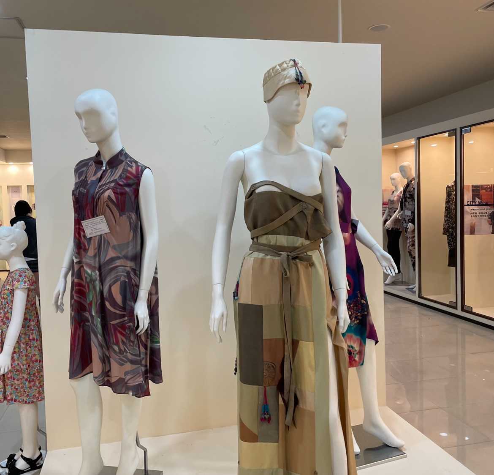
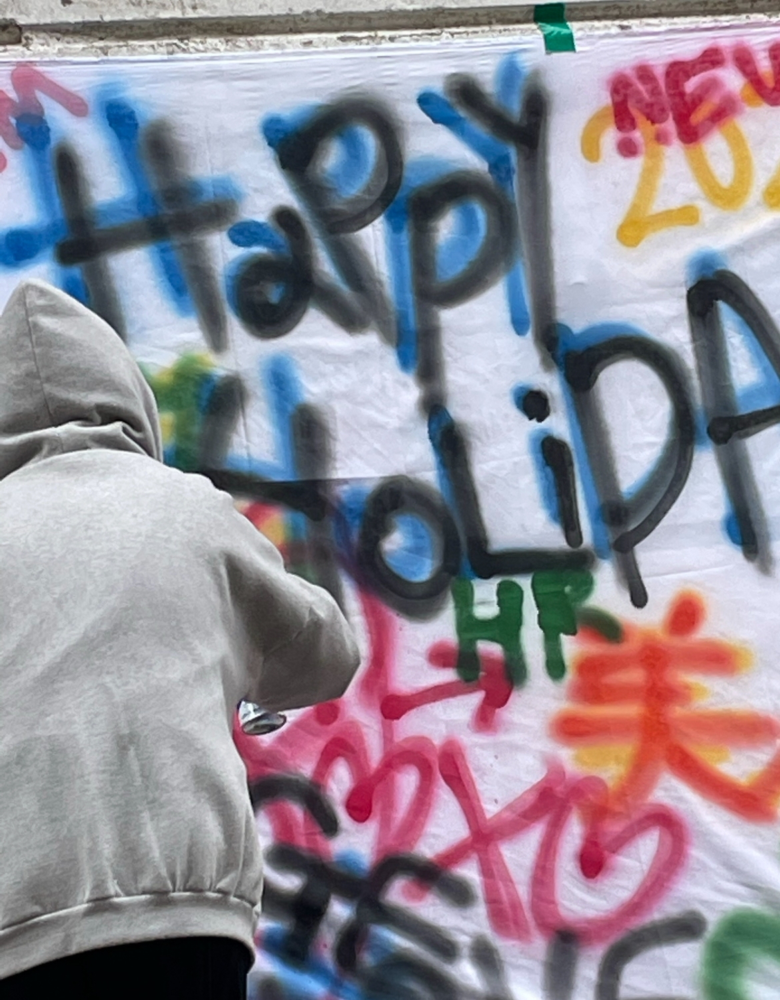

키보드
최근 키보드가 망가져 새롭게 구입한 텐키리스 키보드이다. 기존에 사용하던 키보드와는 다르게 텐키가 없어 공간을 더욱 효과적으로 활용할 수 있다. 또, 오른쪽 상단에 노브가 부착되어 있어 볼륨 조절 및 화면 밝기 조절을 간편하게 할 수 있다는 점 또한 굉장히 실용적이라고 생각했다. 노브 왼쪽의 화면에는 간단한 gif를 삽입할 수 있다.
키링
기타 케이스에 달고 다닐 키링을 찾아보다 주문 제작한 기타 피크 모양 키링이다. 색상은 푸른색과 분홍색의 그라데이션으로 이루어져 있으며, regulus라는 글자는 가장 좋아하는 별자리인 사자자리의 일등성의 이름으로 정하였다. 실사용은 못하지만 좋아하는 것들로만 이루어진 뜻깊은 키링이다.
맨홀
향토생활관 앞에 위치한 맨홀 뚜껑이다. 사각형일 수도 있고, 다각형일 수도 있는데 맨홀 뚜껑이 모두 원형인 것은 뚜껑이 구멍 속으로 빠지지 않게 하기 위해서이다. 원은 어느 방향에서 재어도 중심을 지나는 지름이 일정하기 때문에 구멍과 뚜껑 모두 원형으로 만들면 뚜껑이 구멍으로 절대 빠지지 않는다. 대충 만든 것이 아니라, 디자인적으로 정확하게 계산하고 만든 형태이다.
포스터
친구들과 서울에서 본 에스파 카리나의 팝업 전시회 포스터이다. 시각디자인학과에 다니지만 일러스트레이터가 목표인 나에게는 가장 이상적인 포스터 디자인이다. 주인공인 인물 캐릭터가 중앙에 있고 그 밑에 ‘사랑을 위해, 세계를 위해’라고 적힌 일본어 타이포그래피가 차례로 배치되어 있다. 일러스트와 디자인을 동시에 보여주어 아주 인상 깊었다.
공간
메타그라운드 성수 전시회 내부 공간이다. 전시회의 테마가 고양이와 우주이기 때문에 가장 큰 화면에 띄워져있던 고양이 모양 행성 3D그래픽이 인상적이었다. 전체적으로 전시장 내부가 어두웠고 푸른색 조명이 사용되어 우주를 떠도는 탐사선의 내부를 연상케했다. 여러 그래픽과 공간 디자인이 세련되고 아름다웠다.
큰부리새
대구 신세계 백화점 아쿠아리움에서 본 큰부리새이다. 부리가 몸통만해서 무겁지 않을까 싶었는데, 아쿠아리움 내부에 적혀있는 설명문을 확인하니 큰부리새의 부리는 크지만 무겁지는 않다고 한다. 가짜 부리를 붙여놓은 것 같은 비현실적인 모습이 신기했다. 평소 쉽게 볼 수 없기에 아쿠아리움에서 가장 오랜 시간 관람한 동물 중 하나이다.
캐릭터 폼보드
서울특별시 마포구에 위치한 한 카페에 전시되어 있던 하늘색 공룡 캐릭터이다. 초식 공룡인 브라키오사우르스를 모티브로 한 것 같다. 머리 위에 초록색 네잎클로버를 올려놓은 모습이 귀여웠다. 전체적으로 동글동글하고 귀여운 디자인이었기 때문에 카페에 있는 내내 눈길이 갔다.
무지개
비가 내린 후 하늘에 무지개가 떠 있는 모습이다. 원래 무지개는 호를 이루는 띠 모양인데, 지표에 걸쳐져 반원형 고리 모양으로 나타나는 것이다. 빛의 굴절로 인해 오색 빛을 내는 무지개가 만들어지는 것이 신기하고 아름다웠다. 비가 내리는 날에는 항상 무지개를 기대하게 된다.
한복
실제 한복을 재수선하여 만든 생활 한복이다. 우리나라 전통 의상이 이렇게 세련되고 현대적으로 바뀔 수 있는지 신기했다. 특히 눈길이 갔던 의상은 사진 중앙에 있는 오프숄더 의상인데 한복의 패턴과 디자인도 무척 아름답지만, 모자가 특히 한국적이고 특이해서 한참을 바라봤다.
그래피티
오랜만에 방문한 고등학교의 건물 뒷편 벽이다. 모교 재학 당시 미술동아리 부장으로 활동하면서 벽화 봉사를 한 적이 있는데, 그당시 작업한 그래피티 아이디어 스케치 천이 남아있길래 해당 천을 배경으로 그림 그리는 척 한 사진이다. 검정색과 파란색으로 그림자 효과를 주려고 했던 기억도 생각나면서 즐거운 추억이었다.